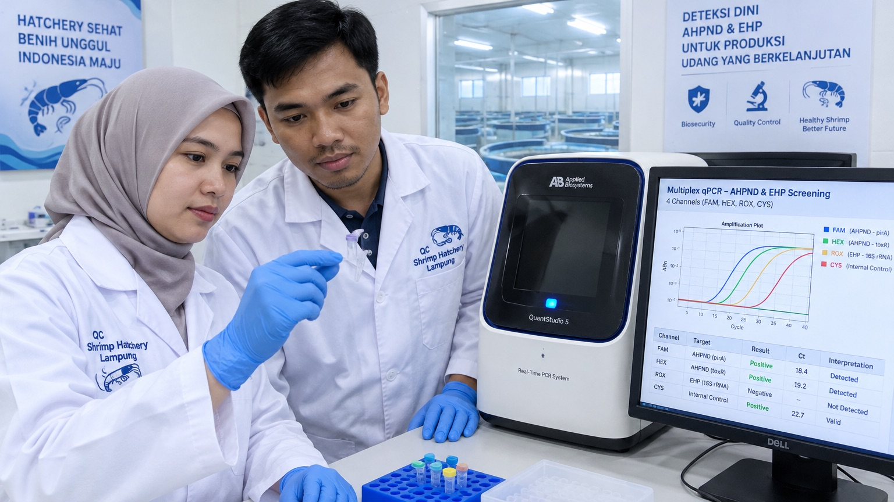
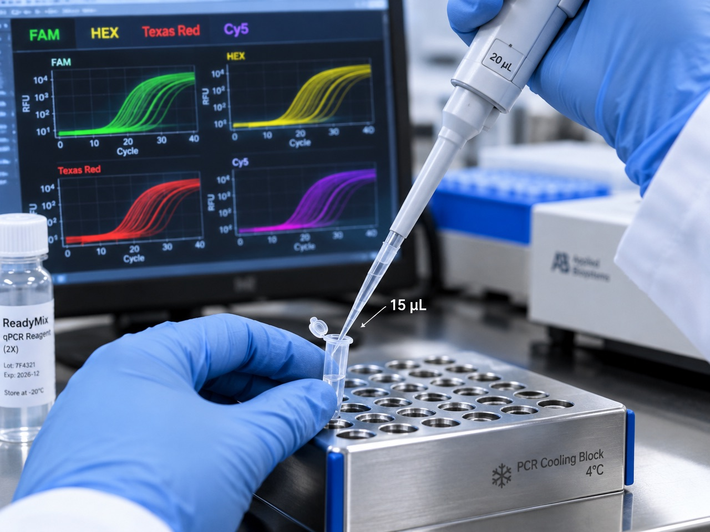
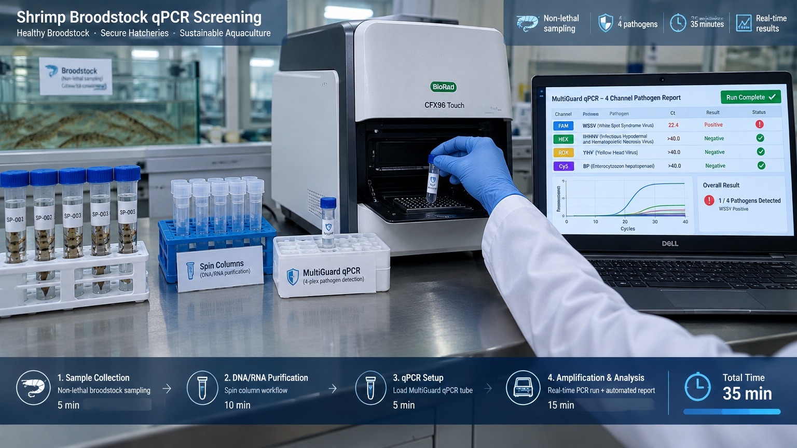
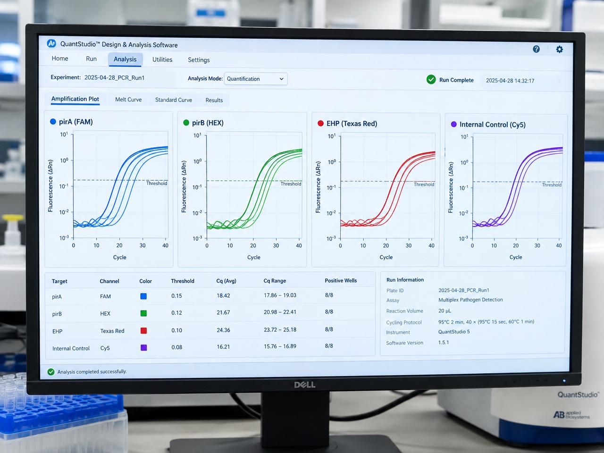
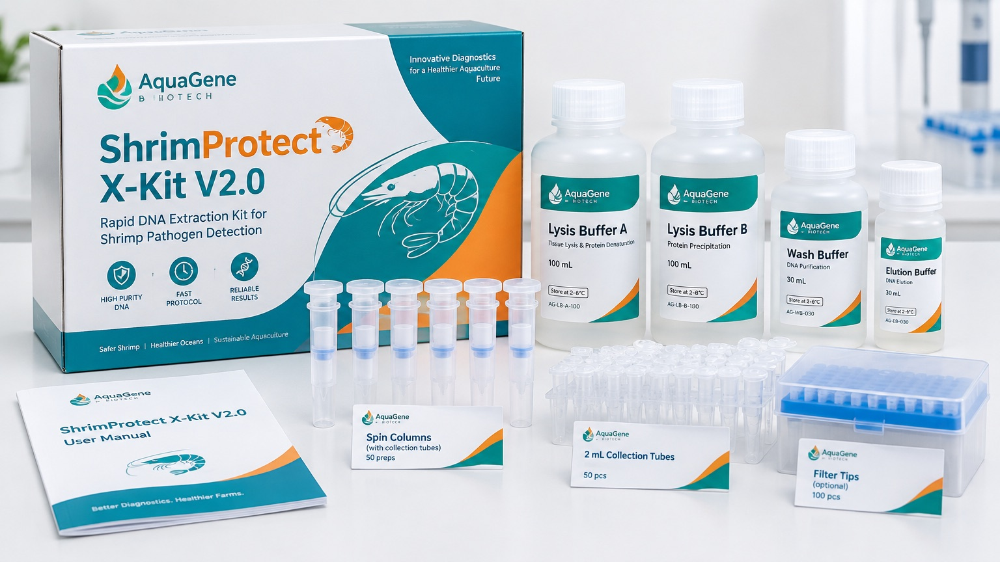

Four targets, one tube: screening for AHPND and EHP before stocking
A hatchery moved from separate tests to one MultiGuard reaction that reads AHPND, EHP and an internal control together, in about 35 minutes.
Lampung, Indonesia • November 23, 2026
ShrimProtect
X-Kit V2.0

At a hatchery in Lampung, the QC team checks broodstock and post-larvae before every sale. With ShrimProtect MultiGuard AHPND/EMS & EHP they now read two diseases in a single qPCR run.
Two diseases, two tests, one long morning
AHPND is caused by Vibrio parahaemolyticus carrying the pirA and pirB toxin genes. EHP is a microsporidian that infects the hepatopancreas. Both slow growth and can ruin a stocking, and testing each one separately meant more tubes, more pipetting and more room for error.
The team wanted one reaction that covered both, with an internal control so a negative result could be trusted, and no master mix to prepare by hand.
The hatchery produces post-larvae for farms across Sumatra and keeps its own broodstock. Its QC team of three works in a small molecular room with one real-time PCR instrument. Before MultiGuard, a typical screening day meant two kits, two plate layouts and two sets of controls for the same samples.
What the team needed
One reaction that covers both AHPND and EHP
An internal control in every well, so a negative result can be trusted
A ReadyMix that is thawed and pipetted, with no master mix to prepare by hand
Results fast enough to be ready before post-larvae are packed
That shortlist pointed to ShrimProtect MultiGuard AHPND/EMS & EHP, a four-target qPCR kit built on Fenrir Mastermix.
“One tube tells us two things, and tells us the reaction worked. That is what makes a negative result believable.”
[Name], QC Manager, Shrimp Hatchery
One reaction, four channels
MultiGuard reads pirA, pirB, EHP and a shrimp internal control in four fluorescence channels: FAM, HEX, Texas Red and Cy5. The ReadyMix is thawed and pipetted, with 15 µL of mix and 5 µL of purified DNA per well.

Figure: four channels read in one run. Illustrative image.
Watch the workflow
See how a broodstock sample goes from extraction to a four-channel result in about 35 minutes.

Video placeholder. Illustrative only.
Non-lethal sampling for broodstock
For broodstock the team uses faecal samples, so valuable animals are not sacrificed. DNA is purified with a spin-column kit, with ShrimProtect X-Kit recommended, and goes straight into the reaction.
Faecal sampling matters for a hatchery whose broodstock represents years of selection. Collecting a sample is quick, repeatable and does not harm the animal, so the team can retest the same animals before every spawning cycle.
Same-day answers
The qPCR run takes under 35 minutes, so results are ready before post-larvae are packed. A positive control and the internal control are on every plate.
Because the result arrives the same day, a positive batch can be held back and resampled while the post-larvae are still in the tank, instead of being discovered after they have shipped.
Setting up the plate
The kit is stored at −20 °C and handled as a ReadyMix. For each well, the team pipettes 15 µL of mix and 5 µL of purified DNA, then loads the plate on the instrument. A positive control and a no-template control go on every plate, and the internal control in the Cy5 channel confirms that DNA was present and the reaction ran.
Because the mix is ready to use, setup takes minutes instead of the half hour that two separate master mixes used to take. The team also reports fewer pipetting errors, since there is one plate layout instead of two.
Reading the result
Each target has its own channel: FAM for pirA, HEX for pirB, Texas Red for EHP and Cy5 for the shrimp internal control. Samples are called positive or negative following the kit’s instructions for use.
The instrument software shows all four curves in one plate view, so a technician can read a full plate at a glance and flag any sample that needs a repeat.
“We decide on the day, not the week.”
[Name], QC Manager, Shrimp Hatchery
What changed
Fewer tubes per sample and one report per batch. The hatchery now screens every broodstock lot before spawning and every post-larvae batch before sale.

Figure: amplification curves for pirA, pirB, EHP and the internal control. Illustrative data.
Results so far
Two diseases read in one reaction, with one internal control
A full plate of results in about 35 minutes of run time
Fewer tubes and one plate layout per screening day
Every broodstock lot and post-larvae batch tested before it leaves the hatchery
None of this needed new equipment. The hatchery used the thermal cycler and real-time PCR instrument it already had.
What is next
The team plans to add the second MultiGuard panel for IHHNV, DIV-1 and WSSV, so that broodstock lots are screened for five targets across two plates. It is also working with its farm customers to share results with each delivery.
For other hatcheries considering the same step, the QC manager’s advice is simple: start with one product line, write down the routine, and let the technicians own it from the first week.
Products used in this story
Listed in workflow order. Each card says what the product did in this story.

ShrimProtect X-Kit V2.0
Extracted DNA from faecal and tissue samples, 30–40 minutes for 9 samples.
Tell us about your samples and the question you want to answer. A Nusantics specialist will reply within two working days with a suggested workflow and timeline.